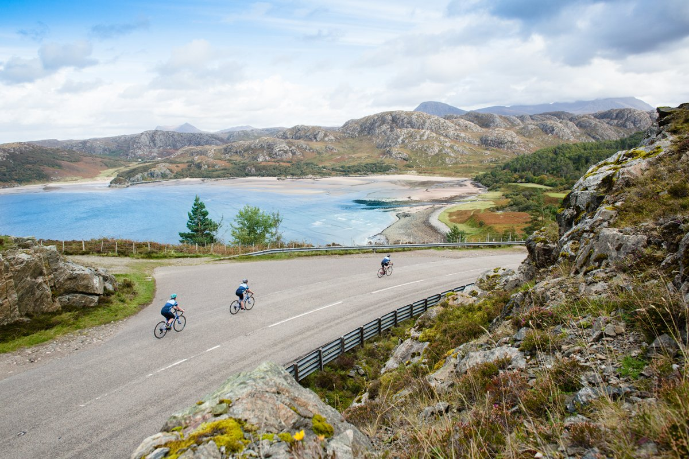

North Coast 500
There are not many places in the world comparable in beauty to the north of Scotland. In 2015, the North Coast 500 tourist route appeared in the region. The North Coast 500 is a 516 miles (830 km) scenic route around the north coast of Scotland. The NC500 starts in the northern city of Inverness and heads to some of Scotland's northernmost coastal points, passing Caithness and John o' Groats before heading south again through Dingwall and finally back to Inverness. Interestingly, you can drive a car, bike or even walk along this route!
